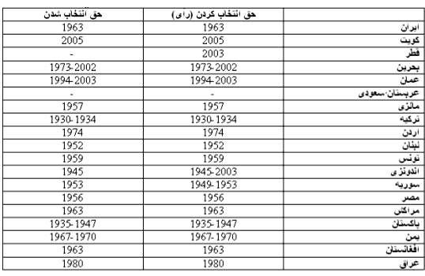

|
|

تبعیض علیه زنان
کارآفرينی، شاهراه برابری زنان؟
خبرنامه گویا
شنبه24 اسفند 1387
زنان ايران دست کم به سه دليل به استقلال مالی نياز دارند: نابرابری در درآمد افتصادی به نسبت مردان، عقب افتادن سن ازدواج و نيز افزايش شمار «خانوارهای زن-سرپرست».
در اين نوشته، اين سه نمود گريبانگير "بود و باش" اقتصادی زنان رامی کاويم و می کوشيم نشان دهيم چگونه کارآفرينی و ايجاد بنگاه های اقتصادی از مهم ترين راهکارهای استقلال مالی زنان است. درآمد ناشی از اين کار، از يک سو راهی است برای استقلال اجتماعی زن ها و از سوی ديگر، درمانی برای فقر اقتصادی. اما پيش از پرداختن به راه حل کارآفرينی، سه مشکل را بررسی کنيم که بيش از هر چيز نمايانگر وضعيت نامناسب اقتصادی زنان در کشورند.
نابرابری درآمد ميان زنان و مردان. زنان برای کاری مشابه، حتی در شرايط سنی و تحصيلی و تجربی همانند، کمتر از مردان دستمزد می گيرند. شوربختانه اين نابرابری حتی در کشورهای پيشرفته دموکراتيک وجود دارد تا چه رسد به کشورهايی که از حقوق اجتماعی مطلوبی برخوردار نيستند. البته هر چه سطح تحصيل بيشتر می شود، نابرابری در دريافت دستمزد ميان زن و مرد کمتر می شود، اما از ميان نمی رود.
از دستمزد نابرابر گذشته، دستيابی زنان به بسياری از مشاغل پردرآمد و رتبه های بالا به مراتب دشوارتر از مردان است و اين خود تبعيض ديگری است. مثلا درايران فعاليت زنان بيشتر در بخش کشاورزی است که دستمزد آن کمتر از ديگر بخش های اقتصادی است (۱). در کشور ما، مشارکت اقتصادی زنان در استان گيلان، بيشترين ـ۶\۲۸ درصدـ و در استان بوشهر کمترين ـ۵\۸ـ است. چنين چيزی دور از ذهن نيست. کشاورزی، فعاليتی که سهم زنان در آن بالاست، در اقتصاد گيلان دست بالا دارد و از همين رو مشارکت اقتصادی زنان در آن استان بالاست (۲).
تبعيض های ناروا در مورد دستمزد و دستيابی به شغل های پردرآمد، زنان را به لحاظ اقتصادی آسيب پذير و در بسياری اوقات محتاج به نان آور مرد می کند. براساس شاخص توسعه انسانی بر پايه جنسيت (GDI)در سال ۲۰۰۴ که بازگو کننده وضعيت بهداشت، آموزش و درآمد زنان نسبت به مردان است، ايران در بين ۱۴۴ کشور جهان در رتبه ۸۲ قرار گرفت که حتی از رتبه کشورهای همسايه نيز پايين تر بود: رتبه ترکيه ۷۰ ، اردن ۷۶، مالزی ۵۱، عربستان ۷۲ و بحرين ۳۹. بايد دانست که وضعيت بهداشت و آموزش زنان در ايران کمابيش همتراز مردان است. پس اين وضعيت درآمد اقتصادی زنان است که رتبه جنسيتی کشور را در چنين رتبه پايينی قرار داده است (۳).
زنان ايرانی که دست کم به لحاظ اسمی زودتر از زنان عربستان سعودی و اردن به حقوق سياسی دست يافتند، بنابر همان شاخص توسعه انسانی بر پايه جنسيت، ازديدگاه حقوق اقتصادی از ايشان عقب ترند! يعنی در زمينه اقتصادی، حقوق زن ايرانی کمتر از زن ترک و اردنی و مالزيايی و حتی سعودی و بحرينی است. زنان بحرينی از اين که پيش از انقلاب اسلامی از ايران جدا شدند، نبايد اندوهگين باشند.
بر پايه آماری که سازمان ملل در جولای ۲۰۰۸ منشر کرد سهم زنان ايران در مديريت و قانون گذاری کشور،۱۶ درصد اعلام شد در حالی که در کشورهايی مانند فيليپين اين سهم ۵۸ درصد و حتی آنگولا ۵۲ درصد است.به اين ترتيب رتبه جهانی ايران ميان ۱۲۰کشور مورد بررسی ، ۱۰۱تعيين شده است (۴).
زنان در ايران برای دستيابی به مقام های بالای سياسی، اجتماعی و اقتصادی همواره دچار موانع جدی حقوقی، عرفی و قانونی هستند. در ايران زنان نمی توانند سفير، قاضی، دادستان، وزير و رئيس جمهور شوند. با اين حال آنان تاکنون موفق شده اند به بالاترين پست سياسی در دسترس برای زنان ايرانی يعنی نمايندگی مجلس، دست يابند. هم اکنون از بين ۲۹۰ نماينده مجلس تنها هشت زن حضور دارند در حالی که در افغانستان ۲۵ درصد نمايندگان مجلس در سال ۱۳۸۵، زنان بودند. تعداد زنان نماينده مجلس ايران از دور اول تا دور هفتم در نوسان بوده ولی تاکنون تعدادشان به ۱۰ درصد تعداد نمايندگان مجلس شورای اسلامی نيز نرسيده است.
تاريخ دستيابی زنان به حقوق سياسی در چند کشور اسلامی

ماخذ: Human Development Report سال ۲۰۰۸ - ۲۰۰۷
عقب افتادن سن ازدواج زنان به دليل دانش آموختگی. دليل دوم نياز زنان به استقلال مالی دانش اموختگی بيشتر ايشان نسبت به مردان و پيآمدهای به دور از انتظار اجتماعی آن است. در ايران امروز چند سالی است که حدود ۷۰ درصد ورودی دانشگاه ها از آن دختران و تنها ۳۰ درصد از آن پسران است. بر اساس گزارش شورای فرهنگی اجتماعی زنان که از نهادهای رسمی نظام جمهوری اسلامی است زنان دارای مرتبه استادی، از سال ۱۳۷۷ تا ۱۳۸۷، ۴\۲۸۴ درصد و زنان دارای دانشياری ۵\۱۷۲ درصد رشد داشته است. بنابر همين گزارش و طی همين مدت، تعداد دانشجويان زن در مقطع دکترا ۲۶۹ درصد افزايش يافته است و شمار دانشجويان دختر در مقطع کارشناسی ارشد نيز ۲۶ برابر و در مقطع کارشناسی ۲۲ برابر شده است. تازه ۶۴ درصد داوطلبان کنکور سراسری دانشگاهها در سالجاری دختران و زنان بودهاند (۵).
درست به همين دليل، زنان دانش آموخته، بر خلاف گذشته، ديگر به زناشويی به هر قيمتی و به ويژه با مردان دانش ناآموخته تن نمی دهند. بنا بر تحقيقاتی، سطح توقع بيشتر اين دختران افزايش می يابد و تنها مايلند با پسری ازدواج کنند که به لحاظ درسی دست کم هم سطح خود ايشان باشد. اما با توجه به نسبت نابرابر دختران و پسران دانشجو و دانش آموخته، چنين چيزی ممکن نيست. از همين رو، تفاوت سن ازدواج ميان دخترانی که ادامه تحصيل نمی دهد و دختران دانش آموخته نزديک به ۵ سال است. گويا ۵۷درصد دختران تحصيل کرده بدون همسر باقی می مانند و يا احتمال ازدواج برای آنها کمتر است (۶). به هر حال روشن است که تحصيلات عالی و دانشگاهی باعث عقب افتادن سن ازدواج ايشان از پنج تا هفت سال می شود (۷).
شايد درست به همين دليل است که بسياری از بلندپايگان فقه تحول نايافته با آموزش عالی دختران مخالفت می ورزند. به طور مثال، آيتالله علی جنتی، از فقهای شورای نگهبان راهيابی دختران به دانشگاهها را برای ايران نوعی «بدبختی» می داند (۸).
افزايش خانوارهای زن-سرپرست. دليل سوم اهميت استقلال مالی زنان افزايش شمار زنان سرپرست خانوار است. بسياری از اين زنان به تنهايی سرپرست خانوار خويشند و ناچار کار ايشان در خارج از خانه به طور مرتب رو به افزايش است. گويا ۵/۱ ميليون زن سرپرست خانوار در شرايط فقر به سر می برند، تحت پوشش خدمات امدادی قرار دارند. براساس گزارشهای رسمی اکنون «خانوارهای زن-سرپرست» فقيرترين فقيرهای ايران هستند. ميزان درآمد زنان در سال حدود چهار هزار دلار بوده، درحاليکه ميزان درآمد مردان در همين دوره يک ساله در حدود ۱۱ هزار دلار بوده است (۹).
کارآفرينی شاهراه استقلال اقتصادی زنان. با توجه به وضعيت اقتصادی که شرحش رفت، ضرورت افزايش مشارکت اقتصادی زنان کشور، بيش از پيش جدی شده است. اما چطور؟ بدون شک و ترديد با کارآفرينی.
مثالی بزنيم. اعطای هشتمين جايزه صلح نوبل به يک بنگلادشی به نام محمد يونس ملقب به بانکدار فقرا بسياری را متوجه نقش مؤثر کارآفرينی زنان در فعاليت اقتصادی و فقرزدايی در جهان کرد. محمد يونس از هنگام قحطی ۱۹۷۲ در بنگلادش يک بانک کوچک به نام بانک گرامين ايجاد کرد که به افراد محلی و به ويژه به کارآفرينان بسيار فقير «اعتبارات خرد» میداد. نکته شايان توجه اين که ۹۶ درصد از ۵/۶ميليون وامگيرنده بانک گرامين در سال ۲۰۰۶ زن بودند.
از آن جا که زنان بسيار ديرتر و سخت تر از مردان امکان دستيابی به وام برای گسترش ابتکارات اقتصادی داشتند و دارند، اهميت کار محمد يونس و بانک گرامين او در فرصت دادن به زنان برای کارآفرينی بيشتر نمايان می شود. معمولا وام دهندگان رسمی يا غير رسمی چون بنگاه های مالی و بانک ها برای اعطای وام در پی اعتبار اجتماعی يا وثيقه مالی يا هر دو اين ها هستند و در بسياری از کشورهای در حال توسعه، زنان از هر دوی اين دو محروم هستند. از همين رو برای مقابله با اين مشکل، زنان در بسياری از کشورها به طور خودجوش و البته در سطحی محدود اقدام به ايجاد صندوق های همياری پس انداز و قرض کرده اند و می کنند. محمد يونس و بانک گرامين کارآفرينی زنان تهی دست و کم درآمد را آسان کردند و الگويی نو برای مبارزه با ندارندگی و نابرابری زنان به جهانيان نشان دادند.
در بنگلادش، گسترش الگوی کارآفرينی به ويژه در ميان زنان پيآمدهای بسيار مثبتی به همراه داشته است. پروژه تلفن روستايی گرامين در بنگلادش از نمونه های مشهور اين گونه موفقيتها است. در اين پروژه به زنان روستايی فقير وام خريد تلفن همراه می دهند. آنها نيز تلفن همراه شان را به هم روستائيان خود برای کسب و کار و يا تماسهای اضطراری اجاره میدهند. درآمد حاصل از اين کار هم از قسط وام بيشتر است. و در نتيجه زنان وام گيرنده کارآفرين، هم بدهی خود را بازپس می دهند و هم درآمدی به دست می آورند.
اين تجربه می تواند برای زنان و مشکلات ويزه اقتصادی ايشان سودمند و کارآ باشد. شکی نيست که در اختيار گذاشتن وام های کم بهره به همراه مشاوره های مداوم برای راه اندازی و گسترش کسب و کار برای زنان نقشی موثر و تاريخ ساز ايفا خواهند کرد.
پانوشت:
(۱) سايت اينترنتی ايرنا. مشارکت اقتصادی مردان بيش از سه برابر زنان در ايران است. به نقل از .سالنامه آماری نيروی انسانی سال "۱۳۸۴ که از سوی مرکز آمار ايران انتشار يافته است، Sunday March 18, 2007 ،. ۸۵/۰۸/۱۳
(۲) سايت اينترنتی ايرنا. مشارکت اقتصادی مردان بيش از سه برابر زنان در ايران است. به نقل از .سالنامه آماری نيروی انسانی سال "۱۳۸۴ که از سوی مرکز آمار ايران انتشار يافته است، Sunday March 18, 2007 ،. ۸۵/۰۸/۱۳
(۳) خديجه مقدم (۱۳۸۵)، از عدم خودباوری تا بی عدالتی جنسيتی: بی عدالتی جنسيتی، ماهنامه اقتصاد ايران، شماره ۸۸، خرداد. به نقل از گزارشی که UNDP هر ساله در مورد توسعه پايدار منتشر می کند.
(۴) سهم زنان ايران در مديريت و قانون گذاری۱۶درصد آنگولا ۵۲ درصد، سايت اينترنتی پيک ايران، www.peykeiran.com/iran_news_body.aspx?ID=55751
(۵) راديو زمانه > خارج از سياست > زنان > رشد چشمگير موفقيتهای علمی زنان در ايران، تاريخ انتشار: ۱۷ آذر ۱۳۸۷
(۶) يارقلی مريم (۱۳۷۸)،افزايش حضور دختران در دانشگاه؛فرصت يا تهديد: ۵۷درصد دختران تحصيل کرده بدون همسر می مانند سرويس اجتماعی برنا//شبکه خبری برنا //www.BornaNews.com//SMS:10000313
(۷) همان
(۸) راديو زمانه > خارج از سياست > زنان > رشد چشمگير موفقيتهای علمی زنان در ايران، تاريخ انتشار: ۱۷ آذر ۱۳۸۷
(۹) بيانيه فعالان جنبش زنان به مناسبت سالگرد ۲۲ خرداد ۱۳۸۷: افزايش فشار بر فعالان جنبش زنان به نقل از روزنامه سرمايه.